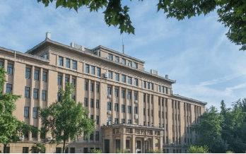
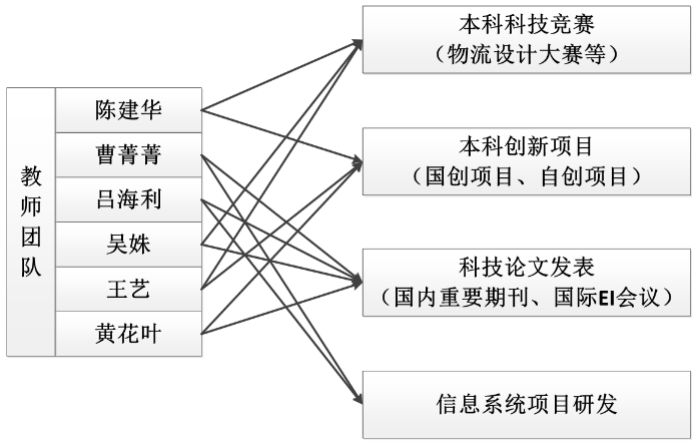
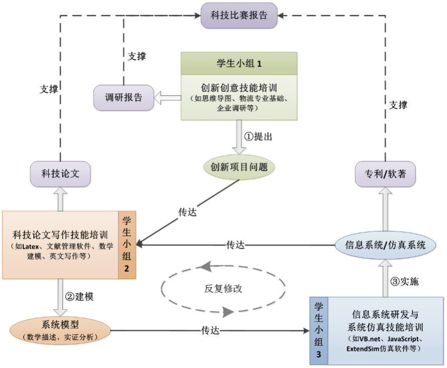

武汉理工大学“启明星（Future Star）”本科生创新团队于2018年正式成立，是在陈建华、曹菁菁、吕海利、吴姝、王艺、黄花叶等六位青年骨干老师的共同牵头组织下，由对学术研究有兴趣且具有较好学习基础的学生组成的本科生创新团队。团队老师中有1名楚天学子、3名青年教学名师，且均有海外留学、访学经历和丰富的大学生创新计划项目及学科竞赛指导经验。团队隶属于武汉理工大学物流工程学院，致力于专业学术领域的知识传播、科学研究和创新人才培养。
- 团队使命：启学术梦想，创明日之星
- 团队愿景：打造一个朝气蓬勃、锐意进取、思维活跃、开放包容的本科生创新人才培养基地
- 团队精神：勤学善思、合作创新
本团队已在运营与供应链管理、物流系统优化仿真、数据分析与管理决策等领域展开了一系列研究，积极指导国家级大学生创新创业训练计划项目、武汉理工大学自主创新基金项目，组织学生团队参加全国大学生物流设计大赛、交通科技大赛、节能减排社会实践与科技竞赛、“挑战杯”全国大学生课外学术科技作品竞赛、供应链运营大赛、物流仿真设计大赛等学科竞赛并多次获奖，为学生提供了广阔的快速成长空间。团队拟逐步与指导教师的研究方向相结合，在培养人才的基础上，围绕具体研究目标，充分利用团队的力量，开展学术研究和应用创新探索。主要发展方向为：
1、大学生学科竞赛
2、大学生创新创业训练计划项目、学校自主创新基金项目
3、较高水平科技论文写作与发表、市场调查及调研报告写作
4、信息系统及平台项目研发与行业应用创新
围绕团队发展方向，团队实行项目导向、任务驱动、矩阵式管理的运行模式。团队分成若干小组，各小组都有明确的方向和任务，小组之间相互交流学习。各小组采取成员自主、教师负责的方式。结合指导教师的研究方向和各自优势，团队成员分工如图1所示，每位教师主要侧重两项创新内容的指导，并兼顾辅助其他教师。
团队主要面向全院各专业大一、大二和大三的学生，积极吸纳有兴趣和专业特长的学生。由团队指导教师根据各自分工，自行选拔成员组成3-4个学生小组，团队学生总人数控制在20人以内。
团队以培养物流与供应链领域创新型人才为目的，采用学术科研和社会实践相结合的模式，以解决物流与供应链系统中的科学问题为中心任务，循序渐进地锻炼学生创新思维和专业技能。如图2所示。

化学楼312
制订人员选拔制度、团队目标管理制度、创新基地日常管理制度等。
（1）积极组队参加专业相关的全国大学生学科竞赛并获奖；
（2）依托指导老师科研课题或指导国家级大学生创新创业训练计划项目、学校自主创新基金项目，撰写调研报告或撰写发表较高水平的学术科技论文。
（3）信息系统及平台项目研发与行业应用创新，申报国家专利和软件著作权。
（4）提升团队成员参与研究生免推或申请出国留学的竞争力。
（5）加强与行业和企业的联系与合作，推动建立院校级的创新人才培养基地。
（6）依托科研成果，推动学生团队创业，创造社会价值和经济价值。